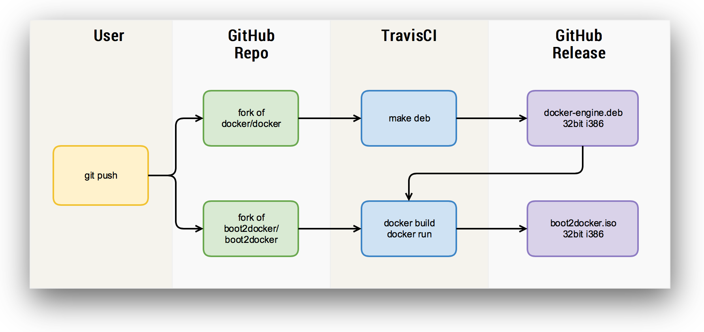
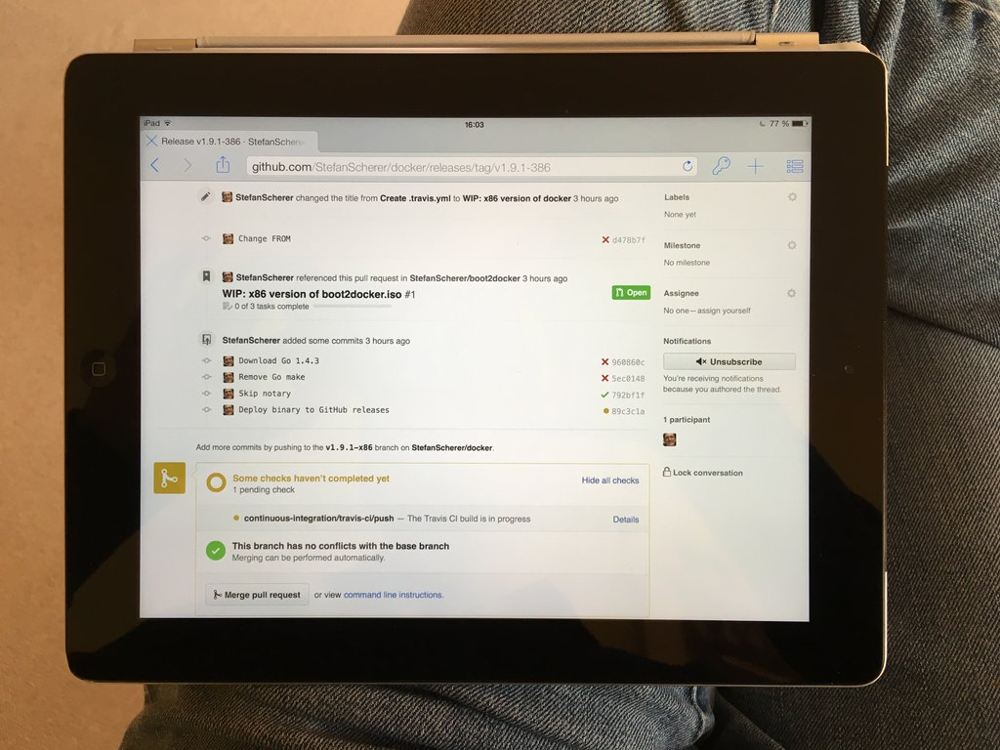
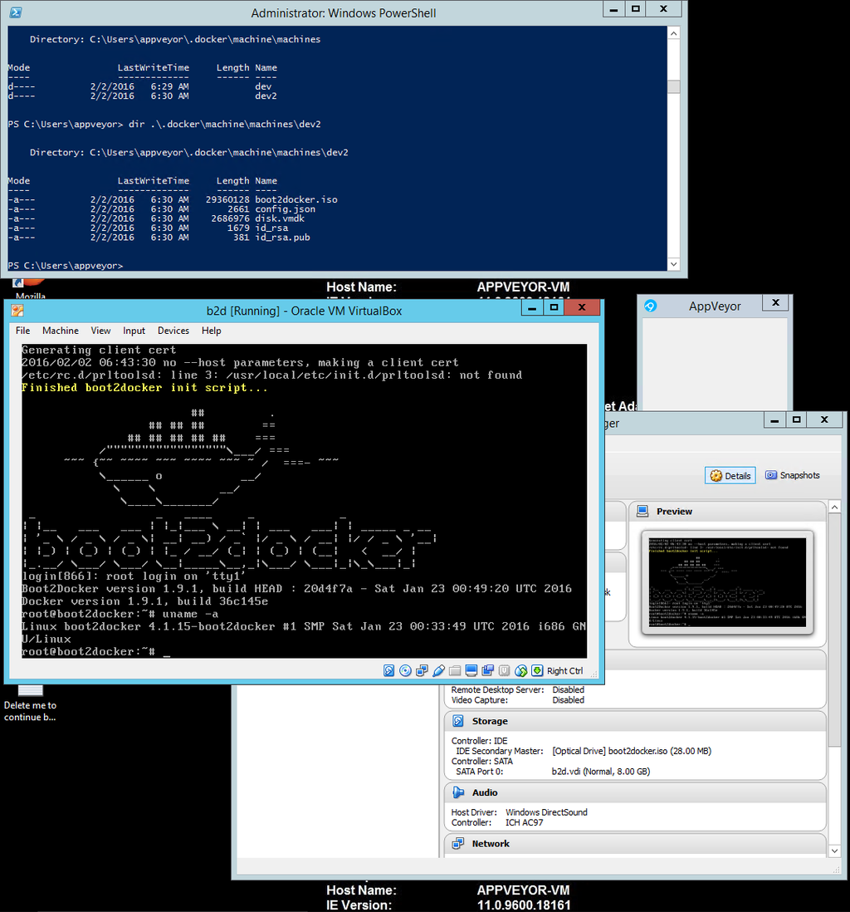
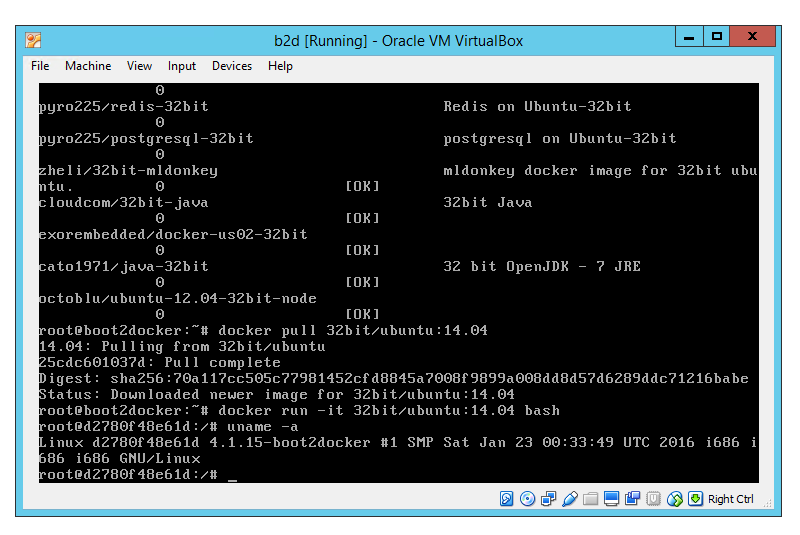
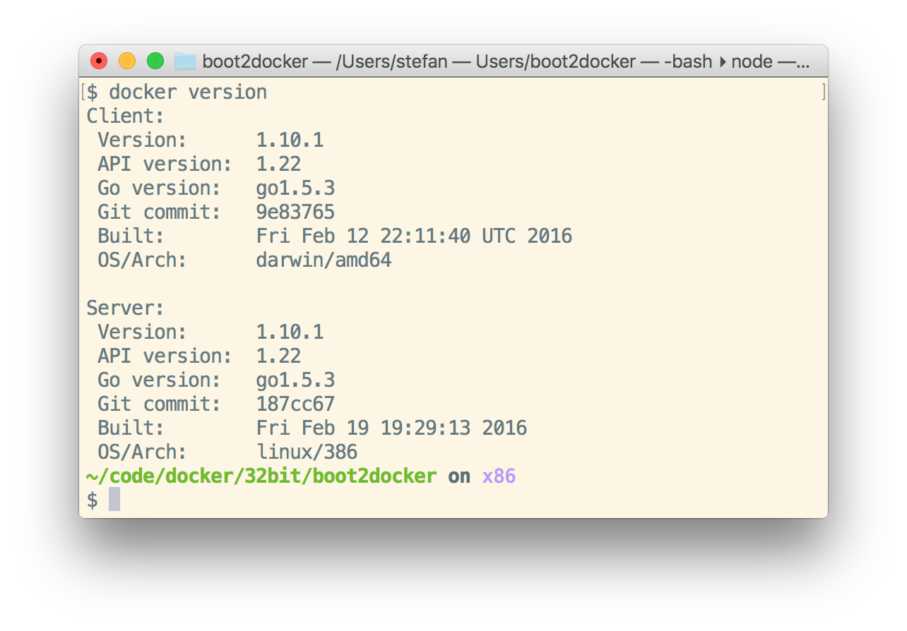
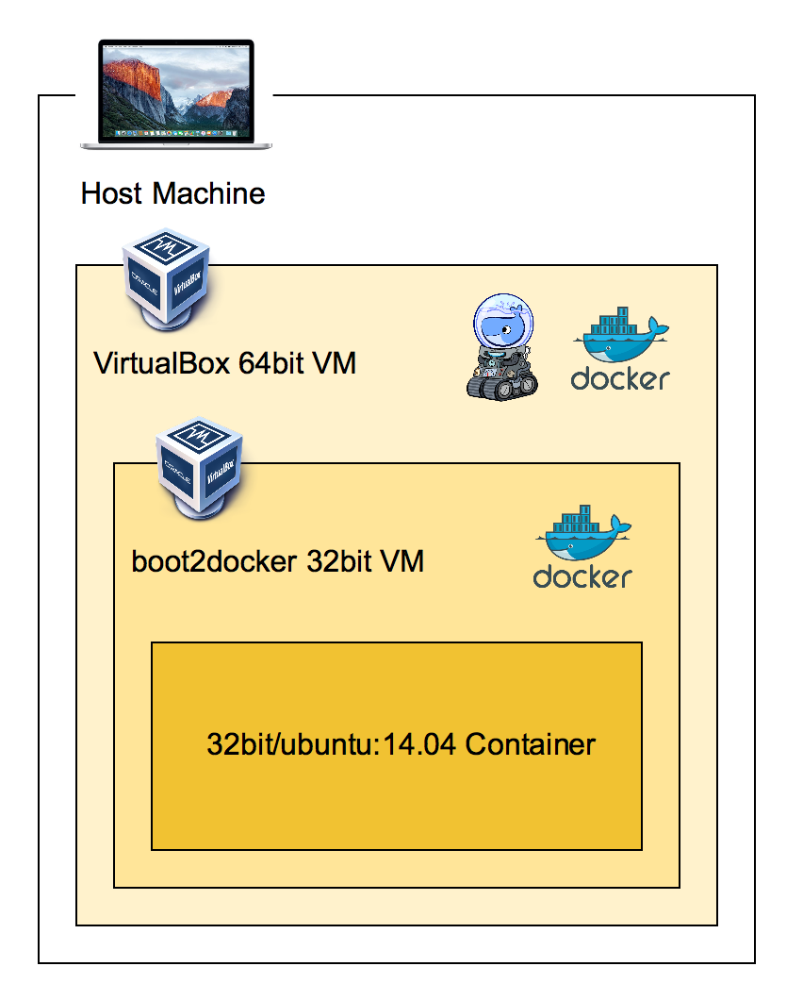

How to create a 32bit boot2docker for x86 CPU's
You normally can use Docker on 64bit Intel CPU's. But does Docker run on 32bit Intel CPU's as well?
Why the heck?
Weeks ago when I wrote some integration tests for docker-machine to test the Chocolatey package on AppVeyor CI and I thought: Wouldn't it be cool to create eg. a real VirtualBox Docker Machine on a CI server and have some real tests there? But I soon found out that most/all of the CI servers out in the cloud also are virtualized. And none really supports what's called nested hypervisor - to run a 64bit VM in a 64bit VM. I left the integration tests with some tests with the driver none and forgot about the idea.
Last week I sat before my old PC running 32bit Windows and I thought if it is possible to run Docker on it as well. I normally use docker-machine to spin up Docker from Windows in a Linux boot2docker VM. And with Chocolatey I can install the 32bit Windows version of docker-machine. But spinning up a VirtualBox Docker Machine doesn't work on my PC as it can't run 64bit VM's. So the idea came back into my mind.
So what is missing to create such a 32bit VM to have at least a running Docker Engine?
- a 32bit Docker Engine binary for x86 CPU
- a 32bit boot2docker.iso file that is used by
docker-machine
So I first searched for some issues on GitHub what others said about 32bit Docker.
I found this interesting Issue docker/docker#136 with a comment by Solomon Hykes:
Here's what I suggest:
Step 1: docker only supports amd64. It will refuse to start a container on any other architecture.This should be made clear to the user.
Step 2: docker will eventually support more architectures, including i386. This will include arch-specific images, facilities to look them up etc.
So, I will accept anything that makes it easier to support multiple architectures in the future. But for now we're sticking to amd64.
That last sentence made me smile. Hey, aren't we doing multi architecture right now? Is the future now?
I started a proof of concept, but didn't want to waste disk space and computing power locally. So I also tested if such a task could be done right from your web browser. Just fork the docker/docker repo and start patching the Dockerfile to build it for 32bit. Then fork the boot2docker/boot2docker repo as well and do the same thing here. To build the DEB package and the ISO file I used TravisCI and deployed the output as a GitHub release to the forked repo.
So my build pipeline looks like this:

I created two pull requests against the forked repos to have the TravisCI build status for each commit. And also we can diff the modified files very easily in the browser.
On the afternoon my kids wanted to play some computer games, so I had to leave my MacBook and PC. But no problem with this setup, I just continued on my iPad.

Porting the Dockerfile from amd64 to another CPU you first have to solve the FROM ubuntu:trusty line and find a base image. Crazy enough there already are some 32bit Docker Image, so I just could use FROM 32bit/ubuntu:14.04 instead.
And step by step I ported packages, filenames, directory names to fit the i386 architecture.
For the boot2docker the problem was to compile a 32bit kernel first, but a make menuconfig is your friend to change all the kernel switches needed to turn off 64bit.
Will it work?
And after the ISO file was finished I tried it with an appveyor.yml to build a integration test for the Chocolatey package on a Windows CI server. There are some technical details to solve right now to install VirtualBox inside the build server without network issues.
So I tested it manually in an AppVeyor CI server through a RDP session. I installed VirtualBox with Chocolatey and then downloaded the 32bit boot2docker.iso file from the GitHub release and started up a boot2docker VM right in AppVeyor:

And does it run containers? Yes, pulling the 32bit/ubuntu:14.04 Docker image and running it also works inside the AppVeyor CI server:

Try it yourself
You can try the 32bit version of Docker yourself on your laptop by creating a VM with docker-machine and adjusting some defaults:
docker-machine create -d virtualbox --virtualbox-boot2docker-url https://github.com/StefanScherer/boot2docker/releases/download/v1.10.1-386/boot2docker.iso dev32
There is a preview of version 1.9.1 and 1.10.1. Here is the output of docker version running from my Mac against the 32bit Linux Docker Engine running in VirtualBox:

"Nested" VM?
We can do another crazy thing with it. VirtualBox is not able to run nested 64bit VM's. But with this 32bit boot2docker it is possible to run the boot2docker VM inside a VirtualBox VM:

I used this Vagrantfile to create the 64bit VirtualBox VM
Vagrant.configure(2) do |config|
config.vm.box = "boxcutter/ubuntu1404"
config.vm.network "public_network"
config.vm.provider "virtualbox" do |vb|
vb.memory = "2048"
end
end
Now spin up the VM and log into it with
vagrant up --provider virtualbox
vagrant ssh
Now inside the 64bit VM you install the Docker client, VirtualBox and Docker Machine with a patch to really disable VT-X checks. Future versions of Docker Machine will allow you to do that as pull request #3018 got merged recently.
sudo apt-get update
curl https://get.docker.com | sudo sh
sudo apt-get install -y virtualbox
sudo curl -L -o /usr/local/bin/docker-machine https://github.com/StefanScherer/boot2docker/releases/download/v1.9.1-386/docker-machine-Linux-x86_64
sudo chmod +x /usr/local/bin/docker-machine
Now it is time again to create the 32bit Docker Machine VM with
docker-machine create -d virtualbox --virtualbox-no-vtx-check --virtualbox-boot2docker-url https://github.com/StefanScherer/boot2docker/releases/download/v1.10.1-386/boot2docker.iso dev
eval $(docker-machine env dev)
docker version
docker-machine ls
docker run -it 32bit/ubuntu:14.04 bash
This proof of concept shows that running Docker in a 32bit VM really could work. And it enables you to experiment a little more. But keep in mind that this is not officially supported and extremely experimental.
I hope you enjoyed this little tour. As always I love to get feedback. What is your use case to run Docker on 32bit? Please leave a comment below or share it on Twitter.